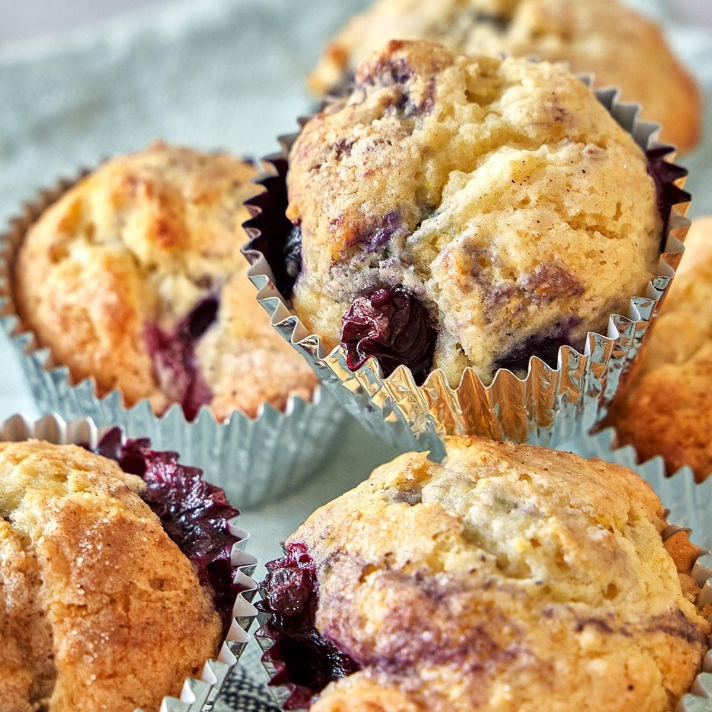

Blueberry Muffins

The perfect pastry. Nothing more can be said about blueberry muffins. They are errorless.
Ingredients
- All-purpose Flour
- White Sugar
- Baking Powder
- Salt
- Vegetable Oil
- One Egg
- Fresh Blueberries
Step-by-step Instructions
- Gather ingredients
- Preheat oven to 400 degress, and grease 8 muffin cups or line with paper liners
- Whisk flour, sugar, baking powder, and solt together in a large bowl until combined.
- Pour oil into a small liquid measuring cup. Add egg and enough milk to reach the 1-cup mark; stir until combined.
- Pour into flour mixture and mix just until batter is combined. Fold in blueberries and set batter aside.
- Spoon batter into prepared muffin cups, filling right to the top.
- Bake in the preheated oven until a toothpick inserted in the center of a muffin comes out clean. About 20 to 25 minutes depending on your oven.